《巅峰坦克》一款可以轻松安利的军武游戏
发布时间：11/28来源：本网站前段时间无聊刷商店的时候，在排行榜第一发现这个叫《巅峰坦克》的游戏。自诩为军事爱好者与手游爱好者，我和基友第一时间下载了，并且在玩了一星期之后，得出了结论。这是一款可圈可点的“军武题材的”游戏，它不一定能让军迷都满意，但作为游戏却算得上是实力雄厚。
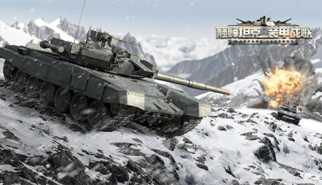Loading这张图很符合“冬季行动”的主题，我很喜欢
先给一个总体结论：
画面：8.2分
画面优秀
操作：7.6分
操作已有较好的提升，但仍有游戏类型带来的的局限
战斗机制：8.4分
伤害机制合理易懂，还原现实设定
收集：7.3分
研发简明，但材料较为复杂，缺乏定向
画面：8.2分
整体画面我是比较满意的。场地不管是风格还是光影都令人认同，每次天梯赛开场的探路时间，已经变成了我的看风景休闲时间，运气好的话还能找到点彩蛋。
咳咳，扯远了。因为是现代战争，绝大多数的车都做到了给人“眼前一亮”的感觉，确实做到了给人一个“现代”“不陈旧”的印象。军事题材的手游，除去那些披着军武皮的回合制游戏，剩下的十个里九个都是二战，甚至一战。对对对大家都有战场情节，但二十一世纪了朋友，是时候往前看了。
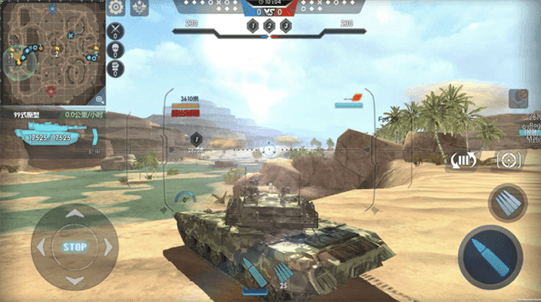沙漠图
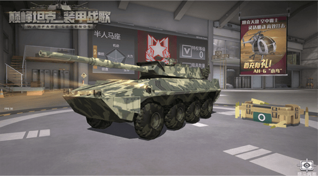真tm帅（从官方偷来的图）
美中不足的是第一常规赛的有两个地图小了些，探测的属性不是很好发挥。第二就是车身的一些细节还不够，像是裙板的形状，探照灯的灯盖这种问题，大概也只有军迷才会注意到。模型修改不易，但也希望官方能够重视起来。
操作：7.6分
游戏很重要的核心就是个操作手感，而手游的操作肯定是不能与电脑的键鼠相比的。可以说《巅峰坦克》已经在一定范围尽了力。
它有两种操作方式，一种摇杆，一种推杆。值得一提的是推杆，让你不用费心思在前进后退上，只要注意方向就好，非常适合骚操作，也适合新手，手感也很好。
但它还是没办法完全突破载具游戏的局限性。载具游戏需要表现出你在“操作厚重的坦克”这件事，所以手感必然是有些重的，炮塔转向是需要时间的。这很合理，但这也是大众最容易被卡在门口的壁垒。只能说有些可惜。
所以个人建议，新人上来之后多尝试几种车和操作方式，熟练一下再找出适合自己的玩法。
战斗机制：8.4分
游戏的伤害机制不错，简明符合逻辑，拥有载具手游里独一无二的现代题材+大地图多人对战+陆空战争。
简单说一下我和基友对战斗的想法。游戏里有三大类车型，额，载具。分别是坦克，装甲车和直升机。具体还能细分火力支援车和武装直升机之类的，在此不做细表。三种车型形成了一个非绝对的三角克制关系。
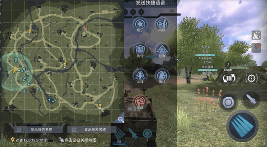坦克作为现实中的陆战王者，本身属于移动炮台，而且是厚甲移动炮台。输出高，火力强，一炮要了脆皮的半条命。是前期最简单的车。
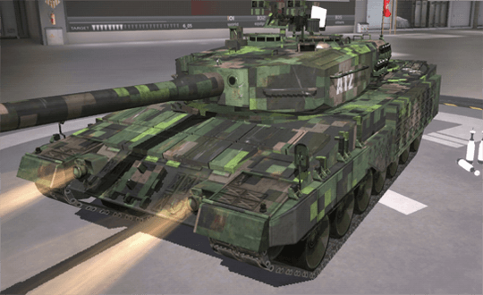符合现实设定的就是，坦克的仰角很小。这就意味着坦克的炮管只能抬高到一定的角度，对于空中和高处的目标，用主炮基本上只能打远处的。如果对方离你太近，炮管就抬不起来，这就需要你换机枪和导弹去打。这也是这个游戏设计的比较平衡的地方，每辆车都有自己的优缺点，面对克制的目标又不会毫无还手之力。
直升机是唯一的空中单位，别人都在地上走，你可以跨越一切麻烦的地形，想飞哪都可以走直线。
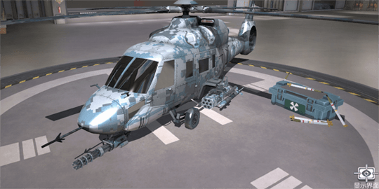前边也说过了，对上坦克它可以在坦克头顶盘旋，然后用火箭弹去压制地面。技术够好可以把一片地面的人耍得团团转。
装甲车是我认为这个游戏最灵活也最有趣的车。上打直升机下打坦克，灵活如兔风骚如狗。
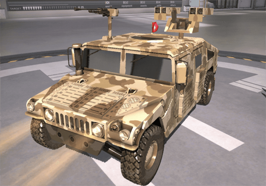总的来说，装甲车的通病是——脆皮，所以对于坦克这种高伤害的地面战神，被打到一炮真的难受。但是......你不被打到不就好了？（笑）实际上，装甲车真的可以做到。
首先，装甲车的速度是地面最快，侦查地面最强。探出了敌人第一时间可以选择打还是跑。对面技术差一点，用机枪跟着扫都跟不上你风一样的速度。
其次，装甲车内部分类多，而且是唯一可以装备地雷的车。在占点图、交通要道放好地雷，打伏击诱敌深入都是妥妥的。
最后，装甲车的武器仰角都非常高，对直升机这种空中单位可以造成非常有效的打击。无论是机枪还是导弹都可以装备，直升机遇到它就乖乖跑远就对了。如果可以，我都想玩一场12V12的地雷战，可惜策划为了平衡，每场匹配的时候每种车都有限制，装甲车好像不会超过5辆......可惜。
在车型的克制上说太多了，说回基础机制。
游戏最多可以打12V12，也就是24个人一个战场。图大人多，跟吃鸡是不能比，但是在同类的竞技游戏里确实是很强大了。进了战场，要是运气好遇到对方是拳头阵型，坦克军团+僚机+护卫车，那人是真多啊.......所有的炮火都锁定了你，开了全速灵活走位，车后，侧面，装甲上全都是炮火爆炸的特效与声音，甚至分不清方向，一心只想着怎么活下来。如果这时候你还能突出重围，活下来回到大部队中......
恭喜你，是个强者。
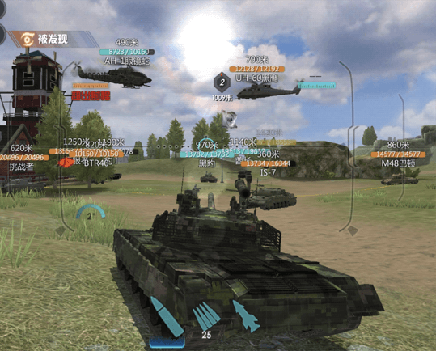收集：7.3分
收集模块属于这个游戏褒贬不一的地方，导致有些人说它是一个氪金游戏。我的主观感受是，大部分的收集比较简单，好理解，价格低于平均，少量车型坑有点深，不是每个人都应该去追的。
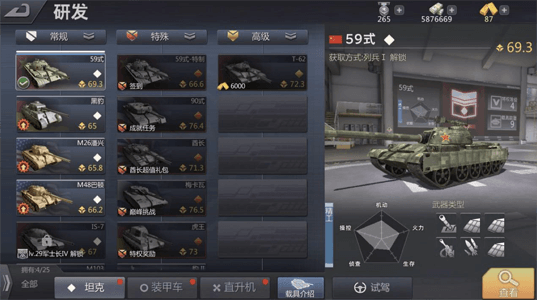先说优点：
研发线的设计上，它是少数有勇气抛弃经典那一套树型研发线，自己做了思考去设计一套新的获得系统的游戏。以前的那一套我要一辆9级车，我得先肝完这条线的1-8级车，还得练。想要另一辆9级车还要从头肝另一条线。说实话，累死人了，所以看到这边的研发线这么简单我还是挺高兴的。
这点勇气带来的结果是它的车的获得方式都很容易懂。无非分三种，等级解锁，金币买，活动得。金币在游戏里也可以攒，有心的话，大多数车都可以到手。跟每隔一期出一堆只有人民币才能直接买的车比，这种可以积攒获得的还是比较照顾0氪玩家。
每辆车是可以换各种武器的，平常战斗结束，一些免费的抽奖都可以抽出四星，这个设定非常友好。5星就需要积攒去换了
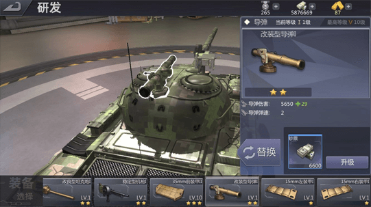说完优点说缺点：
缺点集中在两个点，第一，某些车的获得方式比较深。比如“心动抽奖”可以得到AIFV这辆车（手感贼好），金币抽箱子可以得，随机出各种材料到限时和永久车。中奖概率严格来说是1/200，这对本非酋来说真的约等于没有...建议各位在箱子还剩下50个以下，并且没有人抽到永久车的时候发力。这样获得的概率会一口气提升4倍以上，抽到材料也不算太亏。
第二点就是这个游戏的材料比较复杂。载具解锁新的模块需要升级整辆车出车架、发动机、转向机、观测仪，让整个车身提升之后才有能力装备新的武器（仔细想想竟然还挺合理的？）。而每个部位提升需要两种通用材料（合金、助溶剂）与两种专属材料（如信号机干扰组件，观测仪组件）。武器升级也需要一种材料。
我前面提到，游戏在很多地方简化了我们操作入门的门槛，于是在这里体现出了“军事知识的丰富性”......结果只能说是有利有弊。
综合评分：7.8——值得一玩
一开始我说它是“可以轻松安利的军武游戏”，并不是说笑
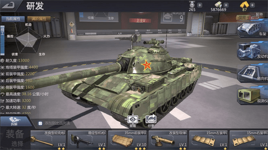经典的59式

阿帕奇
它尽管是军武题材，却做到了很多人没做到的事，就是坚守“游戏性第一”这个原则。更有趣，更爽快，更容易上手，这一切都是将一款游戏安利出去的最大卖点。在这个基础上，它再尽全力去表现现代战争应有的一些魅力，也收录了从二战后期到现今的很多帅气的装备。
我只能算个伪军迷，但偶尔也会感觉到大家身上不得不独行的气质。我们真的有必要这么孤独吗？，期待《巅峰坦克》这个游戏能给我们带来更多的新鲜血液，大家开心的一起玩。无论作为军武题材的作品，还是作为一款游戏，都十分可圈可点。希望制作组将来能更上一层楼，克服困难，继续前进。